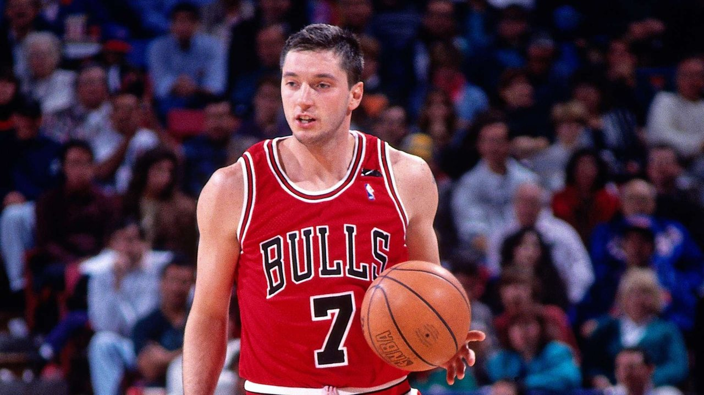

Amazing Basketball Players
Sport BiographiesToni Kukoč is a Croatian former professional basketball player who serves as special advisor to Jerry Reinsdorf, the owner of the Chicago Bulls. After a highly successful period in European basketball, he was one of the first established European stars to play in the National Basketball Association (NBA). Kukoč played for four NBA teams between 1993 and 2006, winning the NBA Sixth Man of the Year Award in 1996. He is a three-time NBA champion, having won championships with the Chicago Bulls in 1996, 1997 and 1998.
Toni Kukoč
Nicknamed "the Waiter" and "the Croatian Sensation", Kukoč is renowned for his
versatility and passing ability. Although his natural position was small forward,
the 6 ft 11 in (2.11 m) Kukoč played multiple positions and demonstrated court vision
and an outside shooting touch that were seldom found in players of his height. He also enjoyed success
in international play, winning Olympic silver medals in 1988 (playing for Yugoslavia) and 1992
(playing for Croatia). Kukoč and Vassilis Spanoulis are the only players in history to receive
the EuroLeague Final Four MVP honor on three occasions. He was elected to the FIBA Hall of
Fame in 2017 and the Naismith Memorial Basketball Hall of Fame in 2021.
In 2023, he was selected to be in the inaugural class of the Chicago Bulls' Ring of Honor.
Source taken from wikipedia.